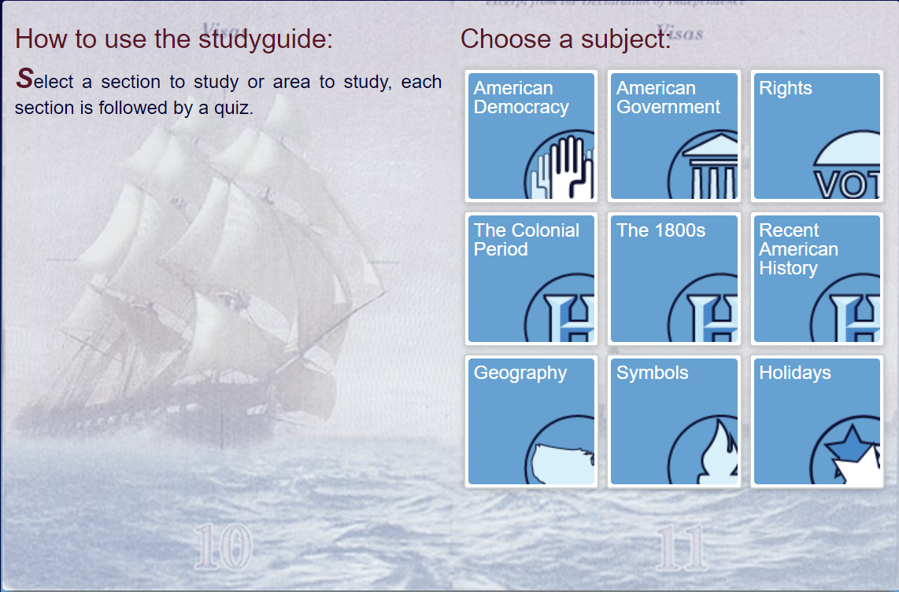

The actual civics test is NOT a multiple choice test. During the naturalization interview,
a USCIS officer will ask you up to 10 questions from the list of 100 questions in English.
You must answer correctly 6 of the 10 questions to pass the civics test.
If you go to this website, it will give you a free citizenship practice test.
Here is an image of what to expect from the practice test.
Civics Practice Test
Another great website that offers a great study guide for the Civics Test is the US Civis Test Study Guide
because it offers specific questions for 9 different topics.This website allows you to practice with Citizenship Test Quizes, Flashcards,Writing Practice, Match up Games, Citizenship Study Guide Questions with Audio, and more. These 9 topics cover all the topics you can be asked in your civics test.These topics are...

1)American Democracy
2)American Governments
3)Rights
4)The Colonial Period
5)The 1800s
6)Recent American History
7)Geography
8)Symbols
9)Holidays